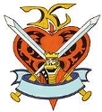

|
Admiral Tian and the Riah Defense Fleet Commander of Riahs defense forces, Admiral Tian is a shrewd and excellent tactician, staunch and serious even in the most lighthearted of circumstances. Although equipped with inferior weaponry and very few experienced soldiers, he has kept Riah safe for this long, preventing skirmishes from wandering into Riah held territory. Pergamino A merchant always out for new ways to make a buck, Pergamino has many ties with Riahs political elite, and maintains a lightly guarded floating spacedock just outside of Riah space, that charges fees to repair Zeon and Federation weaponry. Although this is only legal outside of Riah space, Pergamino's dock is parked just outside the boundary, and it is only a short flight to the safety of Admiral Tians fleet from his present location. Not willing to risk anything in battle, Pergamino is simply out to profit off the war, not obtain any personal glory.  The Black Hand A mysterious privatey owned Columbus Transport resides in the ship dock in Von Braun city, with few crewmembers who seem to only rarely go in and out of its hold. No one is really sure what these men are up to, but they don't seem to be causing any trouble. A strange emblem is painted on the side of the ship... |